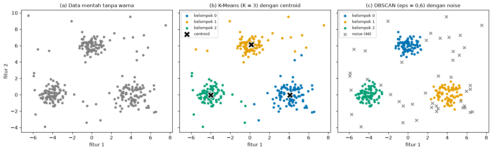
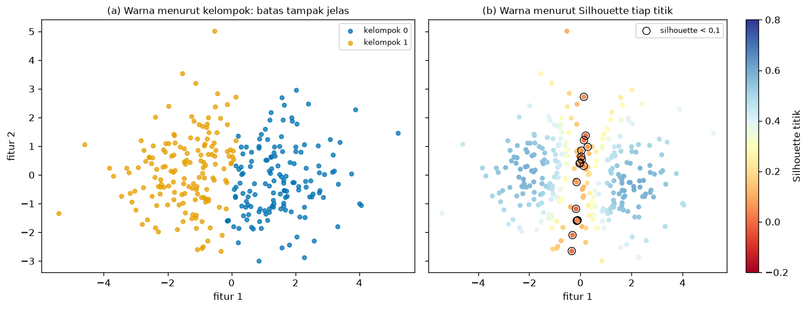
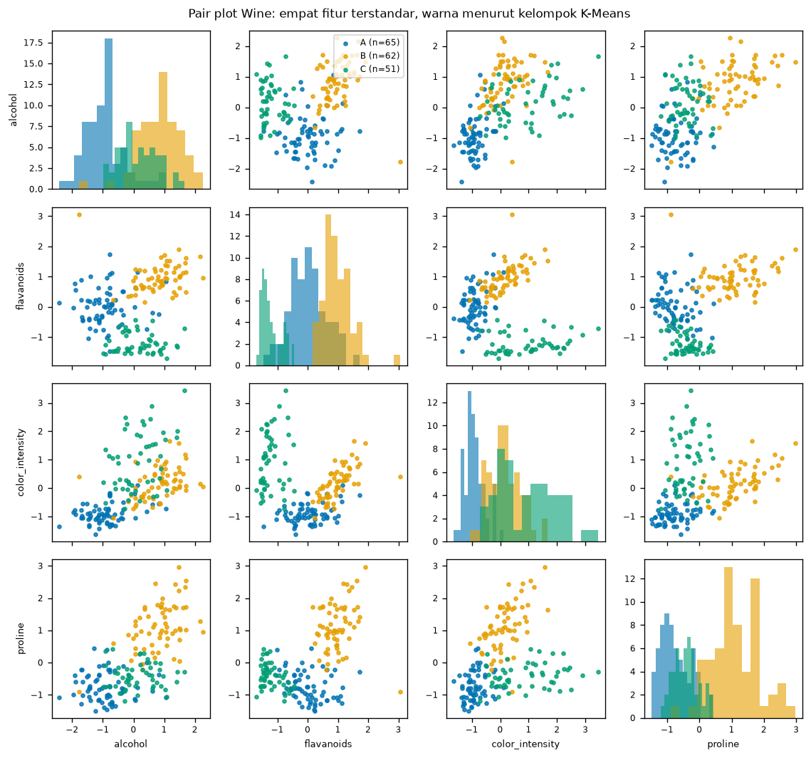
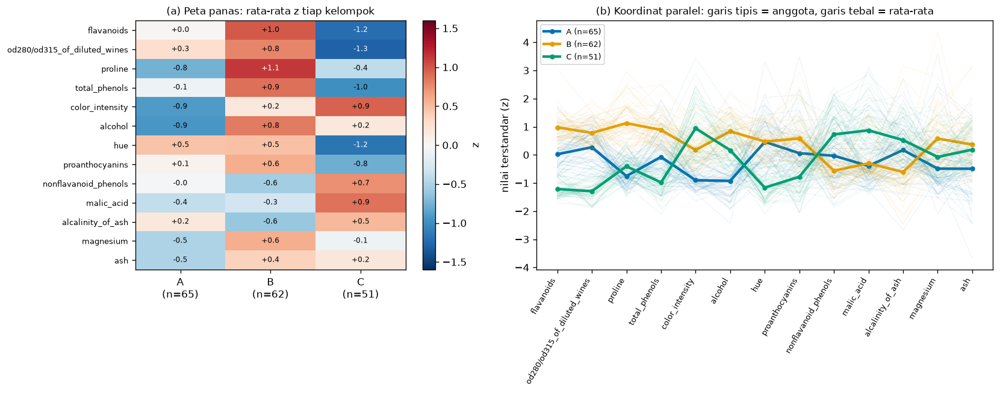
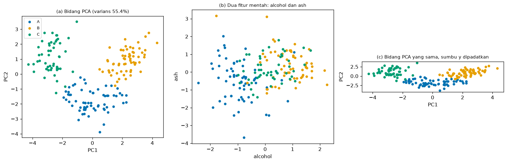

Bab 8 — Cluster Visualization and Analysis¶
Learning Objectives¶
Setelah mempelajari bab ini, kamu mampu:
- Menjelaskan mengapa visualisasi penting dalam clustering, dan mengapa ia bukan bukti bahwa kelompok itu valid.
- Membuat scatter plot dengan pemetaan warna yang konsisten, aman bagi pembaca buta warna, dan menandai centroid serta noise dengan jelas.
- Menyusun figur multi-panel untuk membandingkan beberapa hasil secara berdampingan.
- Mengenali kelompok yang tumpang tindih dan memakai Silhouette per titik untuk menunjukkan titik yang ambigu.
- Membaca dan membuat pair plot, peta panas profil, dan parallel coordinates untuk data berdimensi banyak.
- Menjelaskan mengapa gambar 2D (termasuk proyeksi PCA) bisa tampak lebih rapi daripada kenyataan di dimensi asli, dan menunjukkannya dengan angka.
- Mengenali skala sumbu yang menyesatkan dan kesalahan visualisasi yang umum.
- Menjalankan Eksperimen E dari awal sampai akhir dan mencatatnya.
Introduction¶
Pada data dua dimensi, clustering bisa dinilai dengan mata: kita melihat tiga gerombol, memberi tiga warna, selesai. Pada data nyata yang memiliki belasan fitur, mata tidak bisa melihat langsung. Kita harus memilih cara menggambar, dan setiap cara menyembunyikan sesuatu.
Bab ini mengajarkan cara menggambar hasil clustering dengan jujur. Pertanyaan yang ingin dijawab:
"Bagaimana menampilkan hasil clustering supaya terbaca, dan apa yang tidak boleh disimpulkan dari gambar itu?"
Ada satu sikap yang dipegang sepanjang bab: visualisasi adalah alat bantu analisis, bukan bukti. Gambar yang rapi tidak membuktikan bahwa kelompok itu nyata, stabil, atau berguna. Sebaliknya, gambar yang berantakan belum tentu berarti clusteringnya buruk. Gambar membantu kita melihat dan bertanya. Jawabannya tetap datang dari metrik (Level 5), uji kestabilan (Bab 9), dan pengetahuan tentang masalahnya.
Prasyarat
Bab 6 Level 6 (PCA dan batas visualisasi 2D), Bab 7 (profil kelompok), dan Level 5 (Silhouette). Bab ini tidak mengulang cara PCA bekerja atau cara menafsirkan profil. Fokusnya adalah cara menggambar dan batas gambar.
Fundamental Concepts¶
| Istilah | Arti |
|---|---|
| Scatter plot | Grafik titik: setiap data adalah satu titik pada dua sumbu |
| Color mapping | Aturan yang menetapkan warna tiap kelompok, dan harus tetap sama di semua gambar |
| Centroid | Titik pusat kelompok (K-Means), digambar dengan penanda khusus |
| Noise | Titik yang tidak dimasukkan ke kelompok mana pun (label -1 pada DBSCAN) |
| Multi-panel figure | Satu figur berisi beberapa gambar berdampingan yang berbagi sumbu |
| Pair plot | Matriks scatter plot untuk semua pasangan fitur, dengan histogram di diagonal |
| Heatmap | Tabel angka yang diwarnai menurut nilainya |
| Parallel coordinates | Tiap fitur satu sumbu tegak; tiap data digambar sebagai satu garis yang melewati semua sumbu |
| Overlapping clusters | Kelompok yang daerah sebarannya saling bertumpuk |
| Silhouette per titik | Nilai Silhouette untuk satu titik (Level 5 Bab 5), bukan rata-rata seluruh data |
| Aspect ratio | Perbandingan panjang satuan sumbu x dan y pada gambar |
Detailed Explanation¶
Mengapa visualisasi penting¶
- Memeriksa asumsi. Sebelum memilih K-Means, kita perlu melihat apakah kelompoknya kira-kira bulat. Sebelum memilih
eps, kita perlu melihat apakah kepadatannya seragam. - Menemukan masalah. Noise, titik pencilan, kelompok yang bertumpuk, atau kelompok yang terpecah sering langsung terlihat di gambar, padahal sulit ditemukan dari satu angka metrik.
- Berkomunikasi. Pembaca laporan lebih mudah memahami satu gambar yang jelas daripada tabel angka.
Tetapi visualisasi juga punya tiga bahaya: gambar menyederhanakan (dimensi dikurangi), gambar bisa dimanipulasi (skala sumbu, warna), dan gambar menggoda kita percaya (kelompok berwarna terasa nyata).
Dasar gambar: scatter plot yang jujur¶
Untuk data dua dimensi, scatter plot adalah dasarnya. Beberapa aturan yang membuat gambar bisa dipercaya:
- Satu kelompok, satu warna, di semua gambar. Jika kelompok A berwarna biru di gambar pertama, ia harus biru di gambar lain. Perhatikan bahwa nomor kelompok K-Means bersifat acak (Bab 7), jadi urutkan dan beri nama dulu sebelum menggambar.
- Pakai palet yang aman bagi buta warna. Palet Okabe-Ito di kode ini (
#0072B2,#E69F00,#009E73, ...) dapat dibedakan oleh pembaca dengan buta warna merah-hijau. Jangan hanya mengandalkan warna: pakai penanda berbeda bila perlu. - Beri legenda yang berisi ukuran. "Kelompok A (n=65)" lebih informatif daripada "Kelompok A".
- Beri judul dan label sumbu, termasuk satuannya.
Centroid¶
Centroid digambar dengan penanda yang jelas berbeda dari titik data (misalnya tanda X hitam berbingkai putih). Ia membantu melihat di mana pusat kelompok dan seberapa jauh anggotanya menyebar. Tetapi centroid hanya ada pada algoritma yang punya pusat (K-Means, GMM). DBSCAN tidak punya centroid.
Ingat juga: centroid hanyalah rata-rata. Pada kelompok yang melengkung, centroid bisa jatuh di luar kelompok itu sendiri.
Noise¶
Pada DBSCAN, noise diberi label -1. Cara menggambarnya penting:
- Beri warna abu-abu dan penanda berbeda (misalnya
x), supaya jelas bahwa itu bukan kelompok. - Tulis jumlahnya di legenda.
- Jangan menggambar noise dengan warna kelompok. Itu menyembunyikan kenyataan bahwa algoritma menolak titik tersebut.
Noise bukan berarti "titik buruk". Titik itu hanya tidak cukup padat di sekitarnya menurut eps dan min_samples yang dipilih. Mengubah parameter itu mengubah daftar noise.
Figur multi-panel¶
Untuk membandingkan beberapa hasil (misalnya data mentah, K-Means, dan DBSCAN), taruh gambar berdampingan dalam satu figur. Aturannya:
- Bagikan sumbu (
sharex=True,sharey=True) agar posisi titik bisa dibandingkan langsung. - Beri huruf pada panel ((a), (b), (c)) dan rujuk dari teks.
- Pakai skala dan warna yang sama di semua panel.
- Panel pertama sebaiknya data tanpa warna kelompok, supaya pembaca melihat data sebelum melihat tafsiran algoritma.
Kelompok yang tumpang tindih¶
Gambar dengan dua warna yang berbeda memberi kesan batas yang tegas, padahal pada data yang bertumpuk batas itu dipaksakan oleh algoritma. Untuk menunjukkan ketidakpastian, warnai titik menurut Silhouette per titik, bukan menurut label. Titik dengan Silhouette mendekati 0 berada di dekat perbatasan, dan titik dengan Silhouette negatif kemungkinan lebih dekat ke kelompok lain daripada kelompoknya sendiri.
Dengan cara ini, gambar menjawab "titik mana yang ambigu?" dan bukan hanya "kelompoknya apa?".
Data berdimensi banyak: tiga cara melihat¶
Saat fitur lebih dari dua, kita tidak bisa menggambar semuanya sekaligus. Tiga pendekatan yang saling melengkapi:
- Pair plot menampilkan semua pasangan fitur. Kelebihannya, kita melihat data apa adanya (tanpa transformasi). Kekurangannya, jumlah panel tumbuh kuadrat sehingga hanya praktis untuk sekitar 4 sampai 6 fitur.
- Peta panas profil menampilkan rata-rata (terstandar) tiap fitur untuk tiap kelompok. Ia cocok untuk puluhan fitur. Kekurangannya, ia hanya menampilkan rata-rata dan menyembunyikan sebaran.
- Parallel coordinates menggambar tiap data sebagai satu garis yang melewati semua fitur. Ia menampilkan rata-rata sekaligus sebaran. Kekurangannya, garis yang banyak menumpuk, dan urutan sumbu memengaruhi bacaan. Mengurutkan fitur menurut kemampuannya membedakan kelompok membantu.
Pendekatan keempat adalah proyeksi 2D seperti PCA (Bab 6). Ia meringkas semua fitur ke dua sumbu, tetapi dengan harga: sebagian informasi hilang.
Batas gambar 2D¶
Tiga hal yang perlu disadari:
- Proyeksi bisa membuat kelompok tampak lebih terpisah daripada kenyataan. Bab 6 sudah menunjukkan batas ini secara umum. Di bab ini kita mengukurnya: Silhouette dihitung di dimensi asli dan di bidang 2D, lalu dibandingkan.
- Irisan 2D dari fitur mentah bisa menyembunyikan pemisahan. Dua fitur yang kebetulan tidak membedakan kelompok akan tampak seperti awan bercampur, walau kelompok jelas terpisah di dimensi lain.
- Skala sumbu memengaruhi kesan. Memadatkan satu sumbu membuat gerombol tampak menempel atau memanjang. Sumbu PCA sebaiknya dibuat dengan aspect ratio yang sama (
set_aspect("equal")) supaya jarak di gambar mewakili jarak di ruang PCA.
Visualisasi bukan bukti¶
Pegang daftar berikut:
- Kelompok yang tampak jelas di gambar tidak membuktikan kelompok itu stabil (Bab 9) atau bermakna secara praktis.
- Kelompok yang tampak bertumpuk di proyeksi belum tentu bertumpuk di ruang asli.
- Gambar yang sama bisa tampak "rapi" atau "berantakan" hanya karena pilihan sumbu, warna, atau ukuran titik.
- Karena itu, gambar harus disertai angka (ukuran kelompok, metrik, persentase varians PCA) dan pernyataan keterbatasan.
Kesalahan umum¶
- Warna kelompok berbeda antar gambar.
- Menggambar noise dengan warna kelompok, atau menghilangkan noise dari gambar.
- Menganggap proyeksi 2D sebagai kenyataan tanpa menyebut persen varians yang ditangkap.
- Sumbu yang tidak sama (misalnya
aspectyang dipadatkan) pada gambar PCA. - Terlalu banyak titik yang menumpuk sehingga pola tertutup (atasi dengan mengecilkan titik, menambah transparansi, atau memakai peta panas).
- Memakai palet yang bergantung pada warna merah-hijau saja.
- Menafsirkan kedekatan titik pada plot sebagai bukti kemiripan tanpa melihat apakah fiturnya diskalakan.
- Menarik kesimpulan statistik dari gambar ("terlihat berbeda, jadi berbeda signifikan").
Mathematical Foundation¶
Bab ini sedikit memakai matematika baru. Dua rumus yang dipakai hanya sebagai alat gambar.
Nilai terstandar (z) untuk peta panas¶
Agar fitur berskala berbeda bisa disandingkan dalam satu peta panas, tiap nilai dijadikan z-score. Untuk satu fitur dengan rata-rata \( \bar{x} \) dan simpangan baku \( s \), nilai terstandar sebuah data \( x \) adalah
Rata-rata \( z \) untuk anggota kelompok \( k \) pada fitur tersebut dituliskan \( \bar{z}_k \). Nilai positif berarti kelompok itu berada di atas rata-rata seluruh data pada fitur tersebut, nilai negatif di bawahnya. Satuannya simpangan baku, sehingga proline (ratusan) dan hue (sekitar 1) bisa disandingkan.
Pemisahan kelompok per fitur¶
Untuk mengurutkan fitur pada peta panas dan parallel coordinates, kita memakai selisih rata-rata \( \bar{z}_k \) terbesar dan terkecil antar kelompok:
Fitur dengan pemisahan besar membedakan kelompok lebih jelas, sehingga ditaruh di atas.
Perhitungan manual. Dari tabel keluaran (pembulatan satu sampai dua desimal): fitur flavanoids memiliki \( \bar{z} = +0{,}98 \) pada kelompok B dan \( -1{,}22 \) pada kelompok C, sehingga
Kode mencetak 2,19 karena memakai nilai tanpa pembulatan. Selisih 0,01 itu hanya efek pembulatan.
Peringatan
Pemisahan ini hanya cara mengurutkan fitur untuk menggambar. Ini bukan feature importance dalam arti supervised dan tidak membuktikan bahwa fitur itu "penyebab" terbentuknya kelompok. Kelompok dibentuk dari semua fitur sekaligus.
Silhouette per titik¶
Rumus Silhouette untuk satu titik \( i \) sudah dibahas di Level 5 Bab 5:
Di sini \( a(i) \) adalah jarak rata-rata \( i \) ke anggota kelompoknya sendiri, dan \( b(i) \) jarak rata-rata ke kelompok tetangga terdekat. Nilai mendekati 1 berarti titik cocok di kelompoknya, mendekati 0 berarti berada di perbatasan, dan negatif berarti kemungkinan lebih dekat ke kelompok lain. Di bab ini nilai per titik dipakai untuk mewarnai gambar. Cara menghitung dan memaknainya tidak diulang.
Experimental Procedure (Eksperimen E)¶
- Tujuan: menunjukkan cara menggambar hasil clustering dengan jujur: dasar (data mentah, centroid, noise), ketidakpastian (tumpang tindih), dimensi banyak (pair plot, peta panas, koordinat paralel), dan batas gambar 2D.
- Dataset (alasan):
- Sintetis
make_blobsdengan tiga kelompok berkepadatan berbeda ditambah 30 titik noise acak (total 300 titik). Dipilih karena kita tahu mana noise yang sebenarnya, sehingga perilaku DBSCAN dapat diperiksa. - Dua kelompok sintetis yang bertumpuk (300 titik). Dipilih untuk menunjukkan titik ambigu.
- Wine (
sklearn.datasets.load_wine, 178 sampel, 13 fitur kimia, dokumentasi di scikit-learn). Dipilih karena berdimensi cukup banyak untuk membutuhkan pair plot, peta panas, dan koordinat paralel.
- Sintetis
- Praproses:
StandardScalerpada Wine. Data sintetis dipakai apa adanya karena kedua fiturnya berskala sama. Seed 42. - Algoritma: K-Means (K = 3 pada data sintetis dan Wine, K = 2 pada data bertumpuk), DBSCAN (
eps=0.6,min_samples=5). - Label acuan: label cultivar Wine tidak dipakai untuk clustering. Ia hanya dipakai sekali untuk menghitung ARI (Level 5) sebagai bahan perbandingan.
- Keluaran: lima gambar di
docs/assets/level-6/, serta08_wine_z_profile.csvdan08_config.jsondiexamples/level-6/results/.
Python Implementation¶
Skrip lengkapnya ada di examples/level-6/08_cluster_visualization_and_analysis.py, dan notebook-nya di notebooks/level-6/08-cluster-visualization-and-analysis.ipynb. Setiap potongan kode diikuti penjelasannya.
Konteks masalah: kamu harus menyajikan hasil clustering kepada rekan yang tidak melihat prosesnya. Gambar harus terbaca dan tidak menyesatkan.
Tujuan eksperimen: menghasilkan gambar yang jujur, serta mengukur seberapa jauh gambar 2D mewakili data aslinya.
Pustaka: NumPy, pandas, Matplotlib, scikit-learn (KMeans, DBSCAN, PCA, StandardScaler, silhouette_samples, silhouette_score, adjusted_rand_score), dan alat pencatat _experiment.py.
Bagian A — Siapkan alat¶
import numpy as np
import pandas as pd
import matplotlib.pyplot as plt
from sklearn.cluster import DBSCAN, KMeans
from sklearn.datasets import load_wine, make_blobs
from sklearn.decomposition import PCA
from sklearn.metrics import adjusted_rand_score, silhouette_samples, silhouette_score
from sklearn.preprocessing import StandardScaler
import _experiment as ex
SEED = 42
PALETTE = ["#0072B2", "#E69F00", "#009E73", "#CC79A7", "#D55E00", "#56B4E9"] # aman bagi buta warna
NOISE_COLOR = "#7f7f7f"
Penjelasan: PALETTE adalah enam warna palet Okabe-Ito yang aman bagi buta warna, dan NOISE_COLOR abu-abu khusus noise. Kedua konstanta dibuat di awal supaya semua gambar memakai warna yang sama. SEED = 42 mengunci hasil acak.
Bagian B — Data sintetis dengan noise¶
# Tiga kelompok dengan kepadatan berbeda, ditambah 30 titik noise yang tersebar acak
centers = [(-4.0, 0.0), (4.0, 0.0), (0.0, 6.0)]
blobs, blob_truth = make_blobs(n_samples=270, centers=centers, cluster_std=[0.7, 1.1, 0.6], random_state=SEED)
rng = np.random.default_rng(SEED)
noise = rng.uniform(low=[-8, -4], high=[8, 10], size=(30, 2))
X_synth = np.vstack([blobs, noise])
print("Data sintetis:", X_synth.shape, "| 270 titik kelompok + 30 titik noise")
kmeans_synth = KMeans(n_clusters=3, n_init=10, random_state=SEED).fit(X_synth)
dbscan_synth = DBSCAN(eps=0.6, min_samples=5).fit(X_synth)
n_db = len(set(dbscan_synth.labels_) - {-1})
print(f"K-Means: 3 kelompok, noise 0 | DBSCAN: {n_db} kelompok, noise {int((dbscan_synth.labels_ == -1).sum())} titik")
is_true_noise = np.arange(len(X_synth)) >= 270 # kita tahu mana noise karena data ini sintetis
print(f"Dari 30 noise sebenarnya, DBSCAN menandai {int((dbscan_synth.labels_[is_true_noise] == -1).sum())} sebagai noise")
print(f"Dari 270 titik kelompok, DBSCAN ikut menandai {int((dbscan_synth.labels_[~is_true_noise] == -1).sum())} sebagai noise")
edge = {f"gerombol {g} (std {sd})": int(((dbscan_synth.labels_ == -1) & (np.r_[blob_truth, np.full(30, -1)] == g)).sum())
for g, sd in enumerate([0.7, 1.1, 0.6])}
print("Titik kelompok yang ditandai noise, per gerombol asal:", edge)
Data sintetis: (300, 2) | 270 titik kelompok + 30 titik noise
K-Means: 3 kelompok, noise 0 | DBSCAN: 3 kelompok, noise 46 titik
Dari 30 noise sebenarnya, DBSCAN menandai 26 sebagai noise
Dari 270 titik kelompok, DBSCAN ikut menandai 20 sebagai noise
Titik kelompok yang ditandai noise, per gerombol asal: {'gerombol 0 (std 0.7)': 2, 'gerombol 1 (std 1.1)': 17, 'gerombol 2 (std 0.6)': 1}
Penjelasan baris demi baris:
make_blobs(..., cluster_std=[0.7, 1.1, 0.6])membuat tiga gerombol. Daftarcluster_stdmemberi tiap gerombol sebaran (kepadatan) berbeda.rng.uniform(low=..., high=..., size=(30, 2))membuat 30 titik acak di seluruh bidang. Inilah noise sintetis.np.vstack([blobs, noise])menumpuk keduanya menjadi satu array 300 baris. Indeks 270 ke atas adalah noise. Kita tahu ini karena data sintetis, sesuatu yang tidak ada pada data nyata.KMeans(n_clusters=3, ...)danDBSCAN(eps=0.6, min_samples=5)dijalankan pada data yang sama.set(dbscan_synth.labels_) - {-1}menghitung jumlah kelompok DBSCAN tanpa label -1 (noise).is_true_noiseadalah penanda indeks noise sebenarnya. Dua barisprintberikutnya menghitung berapa noise sebenarnya yang ditandai DBSCAN, dan berapa titik kelompok yang ikut ditandai noise. Kamusedgemerinci titik kelompok yang ditandai noise menurut gerombol asalnya:blob_truthmemberi nomor gerombol asal,np.full(30, -1)memberi tanda -1 pada 30 titik noise, dan&menggabungkan syarat "ditandai noise" dengan "berasal dari gerombol g".
Bagian C — Figur tiga panel¶
fig, axes = plt.subplots(1, 3, figsize=(14, 4.4), sharex=True, sharey=True)
axes[0].scatter(X_synth[:, 0], X_synth[:, 1], s=16, color=NOISE_COLOR)
axes[0].set_title("(a) Data mentah tanpa warna", fontsize=10)
for c in range(3):
part = X_synth[kmeans_synth.labels_ == c]
axes[1].scatter(part[:, 0], part[:, 1], s=16, color=PALETTE[c], label=f"kelompok {c}")
axes[1].scatter(*kmeans_synth.cluster_centers_.T, marker="X", s=170, color="black", edgecolor="white", linewidth=1.2, label="centroid")
axes[1].set_title("(b) K-Means (K = 3) dengan centroid", fontsize=10)
axes[1].legend(fontsize=8, loc="upper left")
for c in sorted(set(dbscan_synth.labels_) - {-1}):
part = X_synth[dbscan_synth.labels_ == c]
axes[2].scatter(part[:, 0], part[:, 1], s=16, color=PALETTE[c], label=f"kelompok {c}")
isolated = X_synth[dbscan_synth.labels_ == -1]
axes[2].scatter(isolated[:, 0], isolated[:, 1], s=34, marker="x", color=NOISE_COLOR, label=f"noise ({len(isolated)})")
axes[2].set_title("(c) DBSCAN (eps = 0,6) dengan noise", fontsize=10)
axes[2].legend(fontsize=8, loc="upper left")
for ax in axes:
ax.set_xlabel("fitur 1")
axes[0].set_ylabel("fitur 2")
plt.tight_layout()
plt.show()

Penjelasan:
plt.subplots(1, 3, sharex=True, sharey=True)membuat tiga panel berdampingan yang berbagi sumbu, sehingga posisi titik sama persis di ketiganya.- Panel (a) menggambar data tanpa warna kelompok (abu-abu).
- Panel (b) menggambar tiap kelompok K-Means dengan warna dari
PALETTE, lalu centroid denganmarker="X"hitam berbingkai putih. Argumen*kmeans_synth.cluster_centers_.Tmembongkar array centroid menjadi dua daftar (koordinat x dan y). - Panel (c) menggambar kelompok DBSCAN, lalu noise dengan
marker="x"abu-abu. Jumlah noise ditulis di legenda. plt.show()pada skrip ini menyimpan gambar ke file (lihat_savefig.py).
Bagian D — Kelompok yang tumpang tindih¶
# Dua kelompok yang sengaja dibuat bertumpuk. Silhouette per titik menunjukkan titik mana yang ambigu.
X_over, _ = make_blobs(n_samples=300, centers=[(-1.2, 0.0), (1.2, 0.0)], cluster_std=1.3, random_state=SEED)
over_labels = KMeans(n_clusters=2, n_init=10, random_state=SEED).fit_predict(X_over)
sample_sil = silhouette_samples(X_over, over_labels)
ambiguous = sample_sil < 0.1
print(f"Silhouette rata-rata (tumpang tindih): {sample_sil.mean():.3f}")
print(f"Titik dengan silhouette < 0,1: {int(ambiguous.sum())} dari {len(X_over)} ({ambiguous.mean() * 100:.1f}%)")
print(f"Titik dengan silhouette < 0: {int((sample_sil < 0).sum())}")
Silhouette rata-rata (tumpang tindih): 0.408
Titik dengan silhouette < 0,1: 17 dari 300 (5.7%)
Titik dengan silhouette < 0: 3
fig, axes = plt.subplots(1, 2, figsize=(12, 4.6), sharex=True, sharey=True)
for c in range(2):
part = X_over[over_labels == c]
axes[0].scatter(part[:, 0], part[:, 1], s=18, color=PALETTE[c], alpha=0.75, label=f"kelompok {c}")
axes[0].set_title("(a) Warna menurut kelompok: batas tampak jelas", fontsize=10)
axes[0].legend(fontsize=8)
image = axes[1].scatter(X_over[:, 0], X_over[:, 1], c=sample_sil, cmap="RdYlBu", vmin=-0.2, vmax=0.8, s=18)
axes[1].scatter(X_over[ambiguous, 0], X_over[ambiguous, 1], s=60, facecolors="none", edgecolors="black", linewidth=0.8, label="silhouette < 0,1")
axes[1].set_title("(b) Warna menurut Silhouette tiap titik", fontsize=10)
axes[1].legend(fontsize=8)
fig.colorbar(image, ax=axes[1], label="Silhouette titik")
for ax in axes:
ax.set_xlabel("fitur 1")
axes[0].set_ylabel("fitur 2")
plt.tight_layout()
plt.show()

Penjelasan:
centers=[(-1.2, 0.0), (1.2, 0.0)]dengancluster_std=1.3membuat dua gerombol yang sengaja bertumpuk (jarak pusat 2,4, sebaran 1,3).silhouette_samples(X_over, over_labels)mengembalikan satu nilai Silhouette per titik, berbeda darisilhouette_scoreyang mengembalikan rata-rata.ambiguous = sample_sil < 0.1adalah penanda boolean titik di perbatasan. Ambang 0,1 adalah pilihan kita, bukan ketentuan baku. Menyebutnya di laporan itu penting.- Panel (a) mewarnai menurut label. Panel (b) mewarnai menurut Silhouette per titik dengan
cmap="RdYlBu"dan skala dikunci (vmin=-0.2,vmax=0.8). Titik ambigu diberi lingkaran hitam.
Bagian E — Wine dan K-Means¶
wine = load_wine(as_frame=True)
features = list(wine.data.columns)
X_wine = StandardScaler().fit_transform(wine.data)
wine_model = KMeans(n_clusters=3, n_init=10, random_state=SEED).fit(X_wine)
# Beri huruf A-C menurut ukuran kelompok, seperti Bab 7
order = np.argsort(-np.bincount(wine_model.labels_), kind="stable")
letter = {int(old): "ABC"[new] for new, old in enumerate(order)}
wine_labels = np.array([letter[int(c)] for c in wine_model.labels_])
sizes = pd.Series(wine_labels).value_counts().sort_index()
print("Ukuran kelompok Wine:", sizes.to_dict())
print(f"Silhouette (13 fitur terstandar): {silhouette_score(X_wine, wine_labels):.3f}")
print(f"ARI terhadap label cultivar (hanya untuk evaluasi, bukan masukan): {adjusted_rand_score(wine.target, wine_labels):.3f}")
Ukuran kelompok Wine: {'A': 65, 'B': 62, 'C': 51}
Silhouette (13 fitur terstandar): 0.285
ARI terhadap label cultivar (hanya untuk evaluasi, bukan masukan): 0.897
Penjelasan:
load_wine(as_frame=True)memuat 178 sampel dengan 13 fitur sebagai DataFrame pandas.StandardScaler().fit_transform(wine.data)membuat setiap fitur memiliki rata-rata 0 dan simpangan baku 1. Tanpa ini,proline(ratusan) akan mendominasi jarak.- K-Means dijalankan pada data terstandar dengan K = 3. Seperti Bab 7, kelompok diberi huruf A sampai C menurut ukuran (
np.argsort(-np.bincount(...))) supaya konsisten. - ARI terhadap
wine.targetdihitung hanya untuk evaluasi. Label itu tidak pernah masuk kefit.
Bagian F — Pair plot¶
pair_features = ["alcohol", "flavanoids", "color_intensity", "proline"]
pair_data = pd.DataFrame(X_wine, columns=features)[pair_features]
# Pisahan kelompok per fitur: selisih rata-rata kelompok terbesar dan terkecil (satuan simpangan baku)
spread = pair_data.groupby(wine_labels).mean().agg(lambda col: col.max() - col.min())
print("Pemisahan kelompok per fitur (z):", spread.round(2).to_dict())
Pemisahan kelompok per fitur (z): {'alcohol': 1.76, 'flavanoids': 2.19, 'color_intensity': 1.84, 'proline': 1.88}
fig, axes = plt.subplots(4, 4, figsize=(9.5, 9), sharex="col")
for i, row_f in enumerate(pair_features):
for j, col_f in enumerate(pair_features):
ax = axes[i, j]
for k, c in enumerate("ABC"):
mask = wine_labels == c
if i == j:
ax.hist(pair_data.loc[mask, col_f], bins=14, color=PALETTE[k], alpha=0.6)
else:
ax.scatter(pair_data.loc[mask, col_f], pair_data.loc[mask, row_f], s=9, color=PALETTE[k], alpha=0.8,
label=f"{c} (n={int(mask.sum())})" if (i, j) == (0, 1) else None)
if j == 0:
ax.set_ylabel(row_f, fontsize=8)
if i == 3:
ax.set_xlabel(col_f, fontsize=8)
ax.tick_params(labelsize=7)
axes[0, 1].legend(fontsize=7, loc="upper right")
fig.suptitle("Pair plot Wine: empat fitur terstandar, warna menurut kelompok K-Means", fontsize=10)
plt.tight_layout()
plt.show()

Penjelasan:
- Kita memilih empat dari 13 fitur:
alcohol,flavanoids,color_intensity,proline. Pair plot dengan 13 fitur berisi 169 panel, terlalu padat untuk dibaca. groupby(wine_labels).mean()menghitung rata-rata tiap kelompok, lalu.agg(lambda col: col.max() - col.min())menghitung pemisahan tiap fitur sesuai rumus pemisahan.- Gambar dibuat dengan perulangan ganda atas baris
idan kolomj. Jikai == j(diagonal) digambar histogram. Selain itu digambar scatter plot fitur kolomjterhadap fitur barisi. sharex="col"menyamakan sumbu x per kolom. Legenda hanya ditaruh pada satu panel supaya tidak berulang.
Bagian G — Peta panas dan koordinat paralel¶
z_profile = pd.DataFrame(X_wine, columns=features).groupby(wine_labels).mean()
feature_order = z_profile.apply(lambda col: col.max() - col.min()).sort_values(ascending=False).index
z_profile = z_profile[feature_order]
print("Urutan fitur menurut pemisahan kelompok:", list(feature_order[:5]), "...", list(feature_order[-3:]))
print(z_profile.round(2).T.head(5).to_string())
Urutan fitur menurut pemisahan kelompok: ['flavanoids', 'od280/od315_of_diluted_wines', 'proline', 'total_phenols', 'color_intensity'] ... ['alcalinity_of_ash', 'magnesium', 'ash']
A B C
flavanoids 0.02 0.98 -1.22
od280/od315_of_diluted_wines 0.27 0.78 -1.29
proline -0.75 1.13 -0.41
total_phenols -0.08 0.89 -0.98
color_intensity -0.90 0.17 0.94
fig, axes = plt.subplots(1, 2, figsize=(14, 5.6), gridspec_kw={"width_ratios": [1, 1.35]})
image = axes[0].imshow(z_profile.T.to_numpy(), cmap="RdBu_r", vmin=-1.6, vmax=1.6, aspect="auto")
axes[0].set_xticks(range(3), [f"{c}\n(n={sizes[c]})" for c in "ABC"])
axes[0].set_yticks(range(len(feature_order)), feature_order, fontsize=8)
for i in range(z_profile.shape[1]):
for j in range(3):
value = z_profile.iloc[j, i]
axes[0].text(j, i, f"{value:+.1f}", ha="center", va="center", fontsize=7, color="white" if abs(value) > 1.0 else "black")
axes[0].set_title("(a) Peta panas: rata-rata z tiap kelompok", fontsize=10)
fig.colorbar(image, ax=axes[0], label="z")
# Koordinat paralel: satu garis tipis per anggota, satu garis tebal per rata-rata kelompok
scaled = pd.DataFrame(X_wine, columns=features)[feature_order]
for k, c in enumerate("ABC"):
members = scaled[wine_labels == c]
for _, row in members.iterrows():
axes[1].plot(range(len(feature_order)), row.to_numpy(), color=PALETTE[k], alpha=0.07, linewidth=0.8)
axes[1].plot(range(len(feature_order)), members.mean().to_numpy(), color=PALETTE[k], linewidth=2.6, marker="o", markersize=4,
label=f"{c} (n={int(sizes[c])})")
axes[1].set_xticks(range(len(feature_order)), feature_order, rotation=60, ha="right", fontsize=8)
axes[1].set_ylabel("nilai terstandar (z)")
axes[1].set_title("(b) Koordinat paralel: garis tipis = anggota, garis tebal = rata-rata", fontsize=10)
axes[1].legend(fontsize=8)
plt.tight_layout()
plt.show()

Penjelasan:
groupby(wine_labels).mean()pada data terstandar memberi rata-rata z tiap kelompok untuk 13 fitur (rumus \( \bar{z}_k \)).apply(lambda col: col.max() - col.min())menghitung pemisahan, dansort_values(ascending=False)mengurutkan fitur dari yang paling membedakan. Urutan yang sama dipakai di peta panas dan koordinat paralel.- Peta panas:
imshow(..., vmin=-1.6, vmax=1.6)mengunci skala warna. Angka ditulis di tiap sel denganax.text, dengan warna teks putih bila sel gelap. - Koordinat paralel: perulangan
members.iterrows()menggambar satu garis tipis transparan (alpha=0.07) per anggota, lalumembers.mean()menggambar garis tebal untuk rata-rata kelompok. Garis tipis menunjukkan sebaran, garis tebal menunjukkan rata-rata.
Bagian H — Batas irisan 2D¶
# Apakah gambar 2D jujur? Bandingkan Silhouette di 13 dimensi dengan Silhouette di dua cara menggambar 2D.
pca2 = PCA(n_components=2).fit(X_wine)
X_pca2 = pca2.transform(X_wine)
raw_pair = ["alcohol", "ash"]
X_raw2 = pd.DataFrame(X_wine, columns=features)[raw_pair].to_numpy()
print(f"Varians yang ditangkap PC1 dan PC2: {pca2.explained_variance_ratio_.sum() * 100:.1f}%")
print(f"Silhouette di 13 fitur : {silhouette_score(X_wine, wine_labels):.3f}")
print(f"Silhouette di bidang PCA : {silhouette_score(X_pca2, wine_labels):.3f}")
print(f"Silhouette di {raw_pair[0]} dan {raw_pair[1]}: {silhouette_score(X_raw2, wine_labels):.3f}")
Varians yang ditangkap PC1 dan PC2: 55.4%
Silhouette di 13 fitur : 0.285
Silhouette di bidang PCA : 0.558
Silhouette di alcohol dan ash: 0.087
fig, axes = plt.subplots(1, 3, figsize=(14, 4.6))
views = [
(axes[0], X_pca2, "PC1", "PC2", f"(a) Bidang PCA (varians {pca2.explained_variance_ratio_.sum() * 100:.1f}%)"),
(axes[1], X_raw2, raw_pair[0], raw_pair[1], f"(b) Dua fitur mentah: {raw_pair[0]} dan {raw_pair[1]}"),
(axes[2], X_pca2, "PC1", "PC2", "(c) Bidang PCA yang sama, sumbu y dipadatkan"),
]
for ax, data, xl, yl, title in views:
for k, c in enumerate("ABC"):
mask = wine_labels == c
ax.scatter(data[mask, 0], data[mask, 1], s=16, color=PALETTE[k], label=c)
ax.set_xlabel(xl)
ax.set_ylabel(yl)
ax.set_title(title, fontsize=9)
axes[0].set_aspect("equal")
axes[2].set_aspect(0.25) # sengaja menipu: sumbu y dipadatkan
axes[0].legend(fontsize=8)
plt.tight_layout()
plt.show()

Penjelasan:
PCA(n_components=2).fit(X_wine)lalutransformmemproyeksikan 13 fitur ke dua komponen (Bab 6).explained_variance_ratio_.sum()adalah persen varians yang ditangkap.- Silhouette dihitung pada tiga ruang, dengan label yang sama (label dari 13 fitur): ruang 13 fitur, bidang PCA, dan dua fitur mentah
alcoholdanash. Perbandingan ini memberi angka untuk "seberapa jujur gambar 2D". - Panel (a): bidang PCA dengan
set_aspect("equal"). Panel (b): dua fitur mentah. Panel (c): bidang PCA yang sama denganset_aspect(0.25)yang sengaja menyesatkan untuk memperlihatkan bahaya skala sumbu.
Bagian I — Menyimpan hasil¶
z_profile.T.to_csv(ex.RESULTS_DIR / "08_wine_z_profile.csv")
ex.save_json({"seed": SEED, "datasets": ["sintetis make_blobs + noise (270+30)", "sklearn load_wine (178 x 13)"],
"preprocessing": "StandardScaler (Wine)", "algorithms": ["KMeans k=3", "DBSCAN eps=0.6 min_samples=5"],
"palette": PALETTE, "noise_color": NOISE_COLOR,
"silhouette_13d": float(silhouette_score(X_wine, wine_labels)),
"silhouette_pca2d": float(silhouette_score(X_pca2, wine_labels)),
"silhouette_alcohol_ash": float(silhouette_score(X_raw2, wine_labels))}, "08_config")
print("Hasil dan konfigurasi tersimpan.")
Penjelasan: profil terstandar Wine disimpan sebagai CSV. Konfigurasi (seed, dataset, algoritma, palet, dan tiga nilai Silhouette) disimpan sebagai JSON supaya gambar dapat dibuat ulang dan dibandingkan.
Code Explanation¶
| Bagian kode | Peran |
|---|---|
PALETTE dan NOISE_COLOR |
Warna tetap di semua gambar, aman bagi buta warna |
sharex=True, sharey=True |
Panel berbagi sumbu agar bisa dibandingkan |
marker="X" dan marker="x" |
Centroid dan noise dibedakan dari titik data |
silhouette_samples |
Nilai Silhouette per titik, untuk mewarnai ketidakpastian |
vmin, vmax |
Skala warna dikunci supaya tidak berubah menurut data |
groupby(...).mean() |
Rata-rata z tiap kelompok untuk peta panas dan koordinat paralel |
alpha=0.07 |
Transparansi garis anggota agar tumpukan tetap terbaca |
set_aspect("equal") |
Jarak pada sumbu x dan y diwakili skala yang sama |
Mengapa tidak memakai seaborn?
seaborn.pairplot dan pandas.plotting.parallel_coordinates memang praktis. Bab ini memakai Matplotlib saja agar tidak menambah dependensi baru dan agar setiap elemen gambar terlihat di kode.
How to Run¶
Dari folder utama proyek (setelah mengaktifkan lingkungan virtual):
pip install -r requirements-notebooks.txt
python examples/level-6/08_cluster_visualization_and_analysis.py
Skrip mencetak output ke terminal, menyimpan lima gambar ke docs/assets/level-6/, dan hasil ke examples/level-6/results/. Notebook interaktifnya:
Semua output pada bab ini berasal dari eksekusi nyata dengan Python 3.14.10, NumPy 2.5.2, pandas 3.0.5, scikit-learn 1.9.0, dan Matplotlib 3.11.1.
Expected Output¶
Output setiap langkah ditampilkan langsung di bawah kodenya pada bagian Python Implementation.
Gambar yang dihasilkan:
Interpretasi output¶
1. Data sintetis dengan noise. K-Means menghasilkan 3 kelompok dan tidak punya konsep noise: ke-30 titik acak ikut masuk ke kelompok terdekat (panel b menunjukkan titik-titik jauh yang tetap berwarna). DBSCAN menemukan 3 kelompok dan menandai 46 titik sebagai noise. Karena kita tahu 30 noise yang sebenarnya, kita dapat memeriksa:
- Dari 30 noise sebenarnya, DBSCAN menandai 26 sebagai noise (4 lainnya kebetulan jatuh dekat gerombol dan terserap).
- Dari 270 titik kelompok, DBSCAN ikut menandai 20 sebagai noise. Titik ini berada di tepi gerombol yang kurang padat. Asalnya hampir semuanya dari satu gerombol: 17 dari 20 berasal dari gerombol kanan (pusat 4, 0), yang sebarannya paling lebar (
cluster_std1,1), sedangkan gerombol dengan sebaran 0,7 hanya 2 titik dan gerombol dengan sebaran 0,6 hanya 1 titik.
Jadi "noise" pada gambar (c) bukan sama dengan "titik yang memang salah". Sebagian adalah anggota tepi yang kepadatannya di bawah ambang. Pada data nyata kita tidak punya daftar noise sebenarnya, sehingga gambar seperti ini hanya menunjukkan apa yang ditolak algoritma, bukan apa yang benar-benar noise.
2. Kelompok yang bertumpuk. Silhouette rata-rata 0,408. Dari 300 titik, 17 (5,7%) memiliki Silhouette di bawah 0,1 dan 3 titik negatif. Panel (a) memberi kesan batas lurus di tengah, padahal panel (b) menunjukkan bahwa titik di sekitar batas itu ambigu. Rata-rata Silhouette 0,408 saja tidak menunjukkan di mana ketidakpastiannya berada, sedangkan gambar per titik menunjukkannya.
3. Wine dan K-Means. Ukuran kelompok 65, 62, dan 51. Silhouette di 13 fitur terstandar adalah 0,285, yaitu di rentang 0,26 sampai 0,50 yang oleh panduan kasar Level 5 Bab 5 disebut struktur lemah (dan hanya sedikit di atas batas bawah 0,25). ARI terhadap label cultivar adalah 0,897 (tinggi, tetapi ini perbandingan dengan label acuan, bukan bukti kelompok "benar").
4. Pair plot. Dari empat fitur yang digambar, pemisahan kelompok terbesar ada pada flavanoids (2,19), lalu proline (1,88), color_intensity (1,84), dan alcohol (1,76). Pasangan yang paling baik memisahkan ketiga kelompok adalah flavanoids terhadap color_intensity: kelompok C (hijau) rendah pada flavanoid dan tinggi pada warna, kelompok B (kuning) tinggi pada flavanoid, kelompok A (biru) rendah pada warna. Pada flavanoids terhadap proline, kelompok B terpisah, tetapi A dan C bertumpuk pada proline. Tidak ada satu pasangan pun yang memisahkan ketiganya tanpa tumpang tindih sama sekali. Kelompok terbentuk dari kombinasi fitur.
5. Peta panas dan koordinat paralel. Fitur diurutkan dari yang paling membedakan: flavanoids, od280/od315_of_diluted_wines, proline, total_phenols, color_intensity, ... hingga alcalinity_of_ash, magnesium, ash yang paling kecil. Pada peta panas:
| Fitur | A | B | C |
|---|---|---|---|
| flavanoids | +0,02 | +0,98 | -1,22 |
| proline | -0,75 | +1,13 | -0,41 |
| color_intensity | -0,90 | +0,17 | +0,94 |
Kelompok B berflavanoid dan prolin tinggi, kelompok C berflavanoid rendah dan warna pekat, kelompok A berprolin dan warna rendah. Koordinat paralel menambahkan satu hal yang tidak terlihat di peta panas: garis tipis anggota bertumpuk dan saling memotong. Rata-rata kelompok jelas berbeda, tetapi anggota individunya banyak yang bertumpang tindih pada banyak fitur. Itu sesuai dengan Silhouette 0,285.
6. Batas irisan 2D (hasil terpenting bab ini). Dengan label yang sama:
| Ruang yang dipakai menghitung Silhouette | Silhouette |
|---|---|
| 13 fitur terstandar | 0,285 |
| Bidang PCA (PC1 dan PC2, varians 55,4%) | 0,558 |
Dua fitur mentah: alcohol dan ash |
0,087 |
Gambar 2D memberi kesan yang berbeda-beda untuk data yang sama. Bidang PCA tampak lebih rapi daripada kenyataan di 13 dimensi (0,558 versus 0,285), karena PCA membuang 44,6% varians, dan Silhouette dihitung hanya pada dua dimensi yang tersisa. Bab ini tidak memeriksa apa isi varians yang dibuang itu. Yang terukur hanyalah selisih angkanya. Sebaliknya, dua fitur mentah yang kebetulan tidak membedakan kelompok tampak bercampur (0,087), padahal kelompoknya ada. Panel (c) menunjukkan bahwa hanya dengan memadatkan sumbu y, gerombol yang tadinya terpisah kini tampak menempel. Tidak ada data yang berubah.
Yang boleh dan tidak boleh disimpulkan dari gambar
Boleh: pada Wine, kelompok K-Means berbeda terutama pada flavanoid, prolin, dan intensitas warna, dan gambar PCA memperlihatkan tiga gerombol yang cukup terpisah di bidang 2D. Tidak boleh: menyimpulkan bahwa kelompok itu "terpisah jelas" berdasarkan gambar PCA saja (Silhouette di ruang asli hanya 0,285), atau menyimpulkan bahwa fitur alcohol dan ash tidak penting karena irisan 2D-nya tampak bercampur.
7. Penyimpanan. Profil z dan konfigurasi tersimpan di 08_wine_z_profile.csv dan 08_config.json.
Practical Application¶
Laporan eksperimen. Gambar tiga panel (data mentah, hasil algoritma A, hasil algoritma B) adalah bentuk paling informatif untuk perbandingan. Selalu sertakan nilai metrik dan persen varians PCA di keterangan gambar.
Menyeleksi masalah data. Sebelum menyetel DBSCAN, gambarlah data dan lihat kepadatannya. Kepadatan yang tidak seragam (seperti gerombol kanan (pusat 4, 0) pada data sintetis) memberi tanda bahwa satu eps mungkin tidak cukup.
Menunjukkan ketidakpastian kepada pemangku kepentingan. Gambar yang diwarnai menurut Silhouette per titik mengatakan "sebagian anggota ini ada di perbatasan". Itu lebih jujur daripada gambar yang diwarnai kelompok dengan batas tegas.
Eksplorasi data berdimensi banyak. Mulailah dengan peta panas untuk melihat fitur mana yang membedakan, lanjutkan dengan pair plot pada fitur terpilih, dan gunakan PCA untuk gambaran umum, sambil mencatat persen varians dan melakukan pemeriksaan di ruang asli.
Hands-on Exercises¶
- Ubah
epsDBSCAN pada data sintetis menjadi 0,4 dan 1,0. Berapa kelompok dan titik noise yang dihasilkan? Gambar versi baru dan jelaskan perbedaannya. - Pada data bertumpuk, ubah pusat dari ±1,2 menjadi ±2,0 dan ±3,0. Bagaimana Silhouette rata-rata dan jumlah titik ambigu berubah?
- Pada Wine, jalankan K-Means (K = 3) hanya pada
alcoholdanash, lalu hitung ARI terhadap hasil K-Means 13 fitur. Ulangi untukflavanoidsdanproline. Apa artinya? - Hitung Silhouette (terhadap label 13 fitur) pada hasil PCA dengan 2, 3, 4, dan 5 komponen. Bagaimana polanya?
- Mengapa peta panas dan pair plot sebaiknya memakai data terstandar?
- Mengapa noise sebaiknya tidak diberi warna kelompok?
- Seorang rekan berkata: "Di gambar PCA ketiga kelompok terpisah, jadi clustering ini valid." Apa keberatanmu, dan bukti tambahan apa yang akan kamu minta?
Jawaban
Hasil nomor 1 sampai 4 berasal dari eksekusi nyata.
eps = 0,4: 5 kelompok (ukuran 83, 21, 79, 42, 6) dan 69 noise.eps = 1,0: 3 kelompok (ukuran 93, 92, 92) dan 23 noise. Padaeps = 0,4jumlah kelompok naik (ada kelompok kecil berukuran 6 dan 21 titik) dan noise membengkak, karena kerapatan di tepi gerombol tidak lagi memenuhi ambang. Padaeps = 1,0kelompok menyerap hampir semua titik, termasuk sebagian noise sebenarnya (noise tinggal 23). Gambar tiga panel akan tampak bersih padaeps = 1,0, tetapi itu bukan berarti lebih benar. Itu hanya lebih permisif.- Pusat ±1,2: Silhouette 0,408, titik di bawah 0,1 sebanyak 17, titik negatif 3. Pusat ±2,0: 0,506, titik di bawah 0,1 sebanyak 16, titik negatif 0. Pusat ±3,0: 0,630, titik di bawah 0,1 sebanyak 4, titik negatif 0. Silhouette rata-rata naik jelas, sedangkan jumlah titik ambigu turun dari 17 ke 16 lalu ke 4. Menjauhkan pusat dari 1,2 ke 2,0 hampir tidak mengurangi titik di perbatasan, karena sebaran (1,3) masih besar. Ketambiguan baru berkurang banyak saat pusat cukup jauh.
alcoholdanash: ARI terhadap K-Means 13 fitur hanya 0,232.flavanoidsdanproline: 0,66. Dua fitur yang kebetulan tidak membedakan kelompok (alcohol,ash) hampir tidak bisa menghasilkan kelompok yang sama dengan hasil 13 fitur, sedangkan dua fitur yang membedakan kelompok (flavanoids,proline) sudah mendekati. Fitur yang dipilih menentukan kelompok, dan irisan 2D yang sembarang menyesatkan.- Silhouette terhadap label 13 fitur: 2 komponen 0,558, 3 komponen 0,454, 4 komponen 0,405, 5 komponen 0,369, 13 fitur 0,285. Semakin sedikit dimensi, semakin tinggi Silhouette. Ini sesuai dengan temuan bab bahwa proyeksi dimensi rendah tampak lebih rapi daripada kenyataan di dimensi asli.
- Tanpa standarisasi, fitur berskala besar (
proline, ratusan) mendominasi gambar dan jarak, sedangkan fitur berskala kecil (misalnyahue) tampak datar. Selain itu, warna pada peta panas hanya bisa dibandingkan antar fitur bila skalanya sama (satuan simpangan baku). - Warna kelompok menyiratkan bahwa titik itu anggota kelompok. Noise justru titik yang ditolak algoritma. Menggambarnya dengan warna kelompok menyembunyikan fakta ini dan membuat jumlah anggota tampak lebih besar. Warna abu-abu dan penanda
xmenyatakan "bukan anggota". - Keberatan: gambar PCA hanya menangkap 55,4% varians dan tampak lebih rapi (Silhouette 0,558) daripada di 13 fitur (0,285). Terlihat terpisah tidak sama dengan valid. Bukti tambahan yang diminta: metrik di ruang asli (Level 5), uji kestabilan terhadap seed dan sampel (Bab 9), perbandingan dengan algoritma lain (Bab 4), dan apakah kelompok bermakna bagi tujuan masalahnya.
Troubleshooting¶
Masalah teknis¶
| Masalah | Penyebab | Solusi |
|---|---|---|
| Warna kelompok berbeda antar gambar | Nomor kelompok K-Means acak | Beri huruf menurut ukuran (seperti Bab 7) dan pakai kamus warna tetap |
| Noise berwarna sama dengan kelompok terakhir | PALETTE[-1] valid di Python (indeks negatif), jadi label -1 memberi warna terakhir tanpa galat |
Pisahkan noise dulu, gambar noise terpisah dengan warna abu-abu |
| Pair plot terlalu padat | Terlalu banyak fitur | Pilih 4 sampai 6 fitur, atau pakai peta panas |
| Garis koordinat paralel menumpuk jadi bercak | Terlalu banyak anggota | Turunkan alpha, atau gambar rata-rata saja |
| Warna peta panas berbeda antar gambar | Skala warna otomatis | Tetapkan vmin dan vmax |
| Gambar PCA tampak terdistorsi | Aspect ratio tidak sama | Pakai ax.set_aspect("equal") |
Kolom tidak ditemukan saat groupby |
Nama fitur salah ketik | Periksa list(wine.data.columns) |
plt.show() tidak menampilkan gambar pada skrip |
Backend tanpa layar (Agg) | Gambar disimpan lewat _savefig.py ke docs/assets/level-6/ |
Kesalahan umum¶
- Warna kelompok tidak konsisten antar gambar.
- Noise digambar dengan warna kelompok atau dihapus dari gambar.
- Menganggap gambar 2D sebagai kenyataan tanpa menyebut persen varians atau membandingkannya dengan ruang asli.
- Sumbu yang dimanipulasi (aspect ratio tidak sama).
- Tidak menandai ketidakpastian pada kelompok yang bertumpuk.
- Hanya mengandalkan warna untuk membedakan kelompok.
- Menyimpulkan validitas statistik dari gambar.
- Menggambar data yang belum diskalakan lalu menafsirkan jarak di gambar.
Summary¶
- Visualisasi adalah alat bantu, bukan bukti. Gambar membantu kita melihat dan bertanya. Validitas datang dari metrik, kestabilan, dan makna praktis.
- Dasar gambar yang jujur: warna kelompok tetap, palet aman bagi buta warna, centroid dan noise dibedakan jelas, panel berbagi sumbu, dan legenda berisi ukuran.
- Pada data sintetis dengan 30 noise, K-Means memasukkan semuanya ke kelompok, sedangkan DBSCAN menandai 46 titik sebagai noise (26 dari 30 noise sebenarnya, ditambah 20 titik tepi gerombol).
- Pada dua kelompok yang bertumpuk, 17 dari 300 titik (5,7%) memiliki Silhouette di bawah 0,1. Mewarnai titik menurut Silhouette per titik menunjukkan ketidakpastian yang tidak terlihat pada gambar berwarna label.
- Untuk data berdimensi banyak, pair plot, peta panas, koordinat paralel, dan PCA saling melengkapi. Masing-masing menyembunyikan sesuatu.
- Pada Wine, Silhouette dengan label yang sama adalah 0,285 di 13 fitur, 0,558 di bidang PCA, dan 0,087 di dua fitur mentah. Gambar 2D bisa tampak lebih rapi atau lebih berantakan daripada kenyataan.
- Memadatkan satu sumbu saja sudah mengubah kesan gambar tanpa mengubah data.
Bab berikutnya: Bab 9 membahas kestabilan dan reproduksibilitas: apakah kelompok yang kita gambar dan tafsirkan bertahan ketika seed, sampel data, atau K berubah.
References¶
- Tufte, E. R. (2001). The Visual Display of Quantitative Information (2nd ed.). Graphics Press.
- Inselberg, A. (1985). The plane with parallel coordinates. The Visual Computer, 1(4), 69–91.
- Wong, B. (2011). Color blindness. Nature Methods, 8(6), 441.
- Rousseeuw, P. J. (1987). Silhouettes: a graphical aid to the interpretation and validation of cluster analysis. Journal of Computational and Applied Mathematics, 20, 53–65.
- Hennig, C. (2015). What are the true clusters? Pattern Recognition Letters, 64, 53–62.
- Matplotlib documentation: Constrained layout, subplots, and shared axes.
- Scikit-learn documentation: Wine recognition dataset.